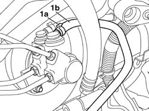

3330C37 pipe from brake fluid reservoir to master cylinder (pump) - r r for rhd versions
- Path
- Procedures > 33 BRAKES > 3330 HYDRAULIC BRAKE SYSTEM > 3330C BRAKE PUMP, RESERVOIR AND LOAD PROPORTIONING VALVE > 3330C37 pipe from brake fluid reservoir to master cylinder (pump) - r r for rhd versions
- Kind
- repair procedure (removal / refitting; the operation number is the code)
- Applies to
- all engines; all production periods
- Interactive page
- https://sloeber94.github.io/elrnDB-fDbl/en/#/2584660
Applies to: all engines; all production periods; only with equipment: Right hand drive
 Removing
Removing
 Refitting
RefittingOpen the bonnet
Disconnect the positive battery terminal.
3330C40 brake fluid reservoir plug - r + r
3330C30 brake fluid reservoir - r + r and wash inside
3330C12 (PUMP) - MASTER CYLINDER R.R. for right hand drive versions
1. Open the band (1a) and remove the pipe (1b) from the master cylinder.

Applies to: all engines; all production periods; only with equipment: Right hand drive
Refitting
RemovingPosition the pipe on the master cylinder and secure the retaining band
3330C12 (PUMP) - MASTER CYLINDER R.R. for right hand drive versions
3330C30 brake fluid reservoir - r + r and wash inside
3330C40 brake fluid reservoir plug - r + r
Connect the positive battery terminal.
0010T64 brake and or clutch fluid check level and top up as necessary
0010T65 hydraulic brake system bleed air
0010T66 manual gearbox oil check level and top up if necessary
Close the bonnet lid.
Topics linked from this page (6)
- 0010T64 brake and or clutch fluid check level and top up as necessary
- 0010T65 hydraulic brake system bleed air
- 0010T66 manual gearbox oil check level and top up if necessary
- 3330C12 (PUMP) - MASTER CYLINDER R.R. for right hand drive versions
- 3330C30 brake fluid reservoir - r + r and wash inside
- 3330C40 brake fluid reservoir plug - r + r